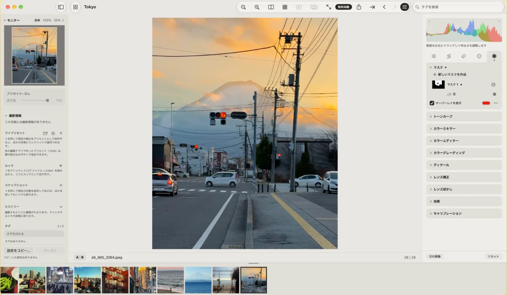
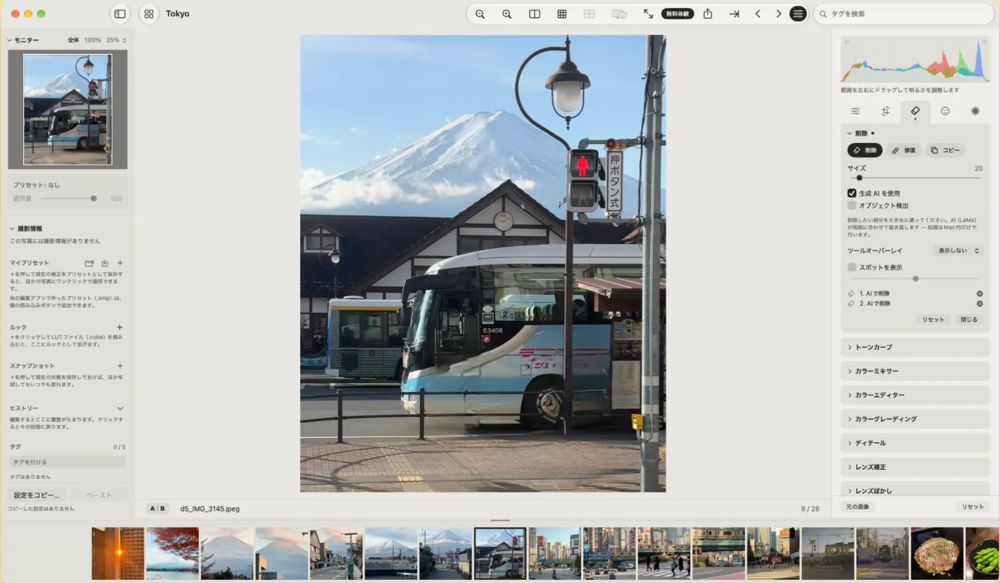

読み込み不要、フォルダのまま
SDカードや外付けSSDのフォルダを開けば、写真がすぐに並びます。カタログもデータベースもなく、編集は写真の隣のXMPファイルに保存。元の画像はそのままです。
フォルダを開けばすぐに始められます。読み込み不要で閲覧・選別・現像。写真がMacやWindows PCの外に出ることはなく、AIもすべてパソコン上で動きます。
無料でダウンロードでき、30日間すべての機能を無料で試せます。macOS 26以降。 Windowsは10(64ビット)以降。
「WindowsによってPCが保護されました」と表示されたら「詳細情報」→「実行」をクリックしてください。

カメラごとに合わせたRAW — 130機種以上のカメラに合わせたプロファイルでRAWを開きます。露光量、トーンカーブ、カラーグレーディングまで。何千枚でもすばやく。
SDカードや外付けSSDのフォルダを開けば、写真がすぐに並びます。カタログもデータベースもなく、編集は写真の隣のXMPファイルに保存。元の画像はそのままです。

肌はなめらかに、トーンは均一に、質感は残して。顔、あご、目、鼻、唇の形もスライダーで整え、同じ人物のシミは複数の写真からまとめて消せます。

被写体・空・背景・人物をワンクリックで選択し、マスクごとに補正。追加・除外・交差で仕上げます。

消したいものを塗るだけで、周囲に合わせて埋めます。AIはすべてパソコン上で動き、写真がMacやWindows PCの外に出ることはありません。

AI接続をオンにすると、ClaudeやChatGPT(Codex)がButter Editを直接操作します。連写から一番よく撮れたカットを選ぶ、言葉で伝えた色味に補正する、参考写真と同じトーンに合わせる、マスク・切り抜き・書き出しまで会話で任せられます。
直接購入版（Mac・Windows）の機能です。ClaudeまたはChatGPTのアカウントが別途必要です。初期設定ではオフで、オンの間はAIが見る小さなプレビュー画像が接続したAIサービスに送信されます。
「このフォルダの連写から一番よく撮れた写真に星3つを付けて」
「この写真を温かいフィルム風に補正して」
「デスクトップの参考写真と同じトーンに合わせて」
写真を削除するコマンドはありません。補正は取り消せます（Macは⌘Z、WindowsはCtrl+Z）。
Butter Editは、読み込みもカタログもいらない写真編集アプリです。SDカードや外付けSSDのフォルダを開けば、写真がすぐに並びます。閲覧、選別、RAW現像、編集まで。何千枚もの写真をすばやく扱えるように作りました。
サブスクリプションではありません。一度買えばずっと使えます。
閲覧・選別・編集はいつでも無料です。
「30日間の無料体験を開始」をクリックすると、30日間すべての機能を使えます。自動で課金されることはありません。
体験期間が終わるとロックされるのは書き出しだけ。一度購入すればずっと書き出せます。
App Storeの外で直接購入すると、MacでもWindowsでも、3台まで使えます。
ご質問や問題はメールでお送りください: thefilmtravel@gmail.com
お使いのパソコン（Macの機種とmacOSのバージョン、またはWindowsのバージョン）、カメラの機種、起きたことを書いていただくと早くお手伝いできます。
アプリは無料でダウンロードできます。「30日間の無料体験を開始」をクリックすると、30日間すべての機能を使えます。体験後も閲覧・選別・編集は続けて使え、書き出しには一度だけの購入が必要です。自動で課金されることはありません。
同じApple Accountでサインインしたマックで、設定の「購入」タブ →「購入を復元」をクリックします。
元の写真は変更されません。編集内容は写真の隣の.xmpファイルに保存されます。
MacではmacOSが対応しているカメラ、Windowsではアプリ内蔵のRAWデコーダー（LibRaw）が対応しているカメラのRAWを開きます。新しいカメラはmacOSやアプリのアップデート後に開けるようになることが多いです。
USBで接続したカメラをアプリから操作し、撮った写真を選んだフォルダに直接取り込みます。初めて接続するときはカメラへのアクセスを許可してください。